Tintern · Wye Valley · Wales
Two shepherd's huts. A farmhouse annex. One quiet valley.
Reddings Retreat sits on a working farm above Tintern — ten minutes' walk from the village, and a proper way from everywhere else. Two shepherd's huts sharing a field, and a farmhouse annex besides — each with its own fire, and its own reason to come back.
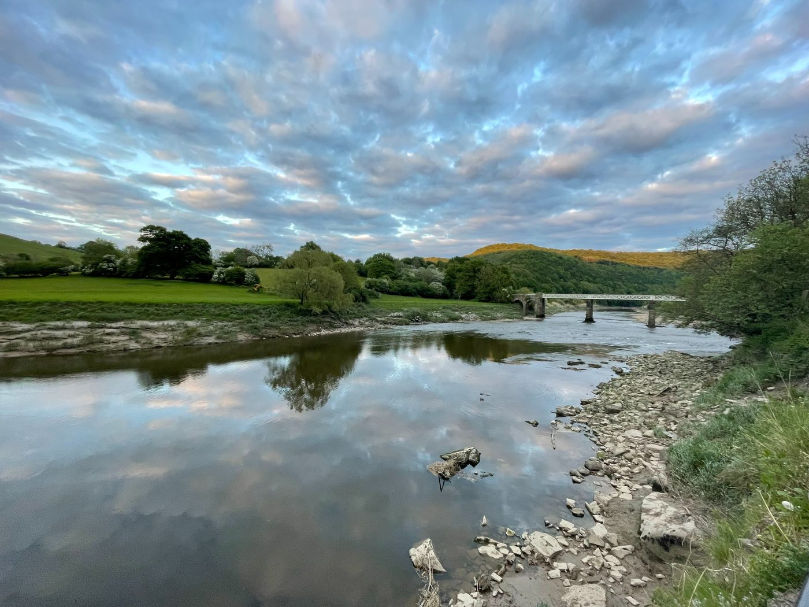
A look around
The farm, the huts, the valley
From the farm gate to the village pub, it's all within an easy walk — a trail worth knowing before you arrive.
In pictures
A closer look
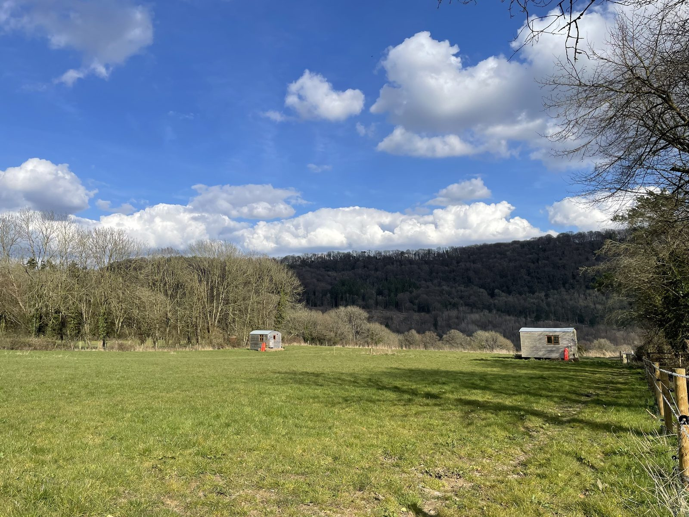
Warren & Burrow's huts, across the field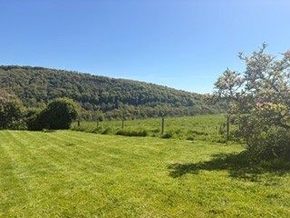
The view across the valley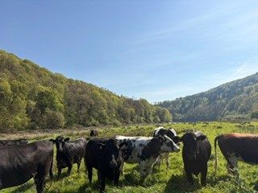
The farm's cattle, by the Wye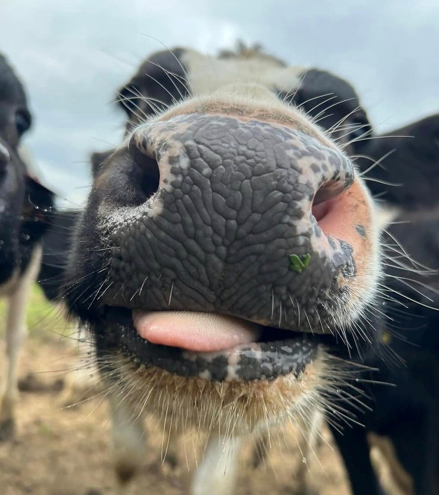
Making friends Sheep in the top field
Sheep in the top field
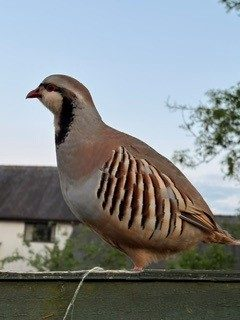
A regular visitor The view from Burrow
The view from Burrow
 The lane onto the farm
The lane onto the farm
 The walk into Tintern
The walk into Tintern
 Tintern Abbey, a short walk away
Tintern Abbey, a short walk away
 Warren's door
Warren's door
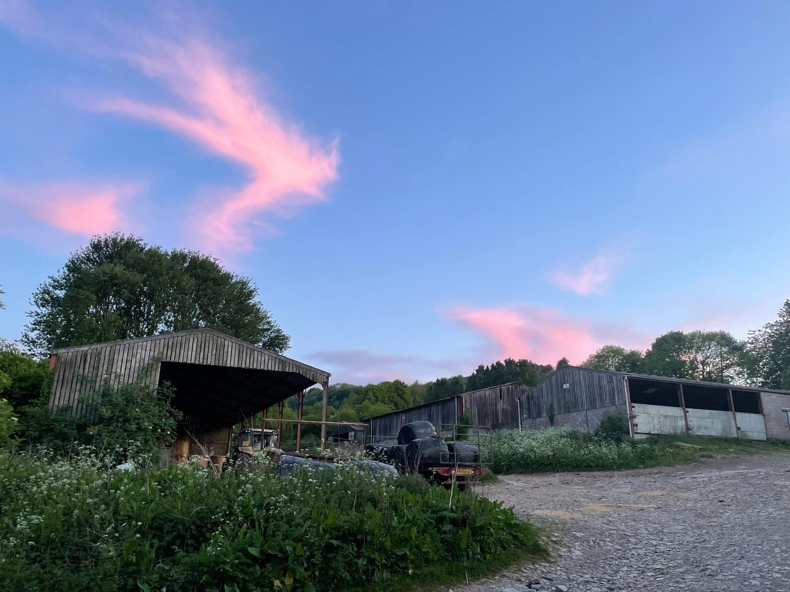
Evening skies over the farm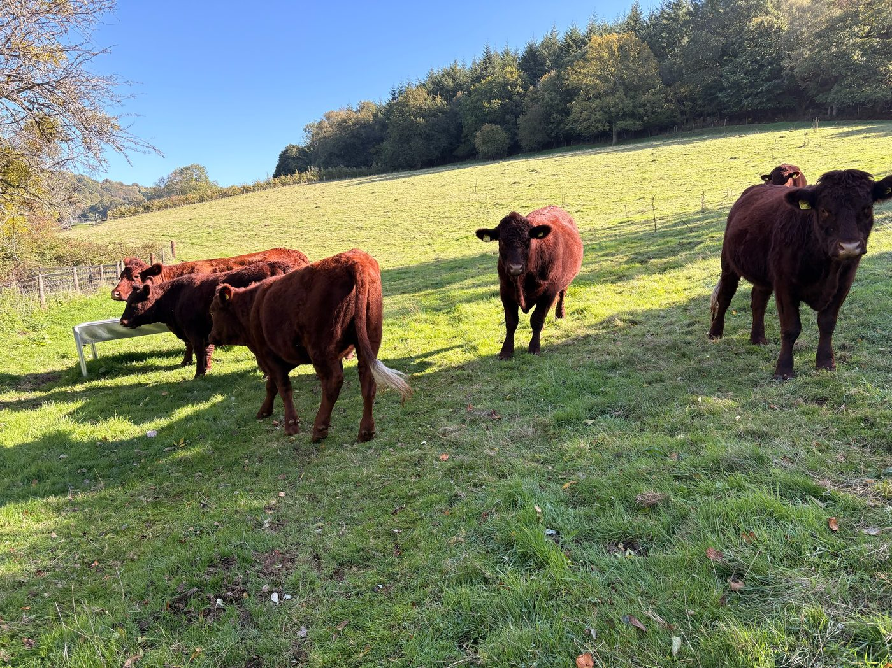
The herd, out in the fields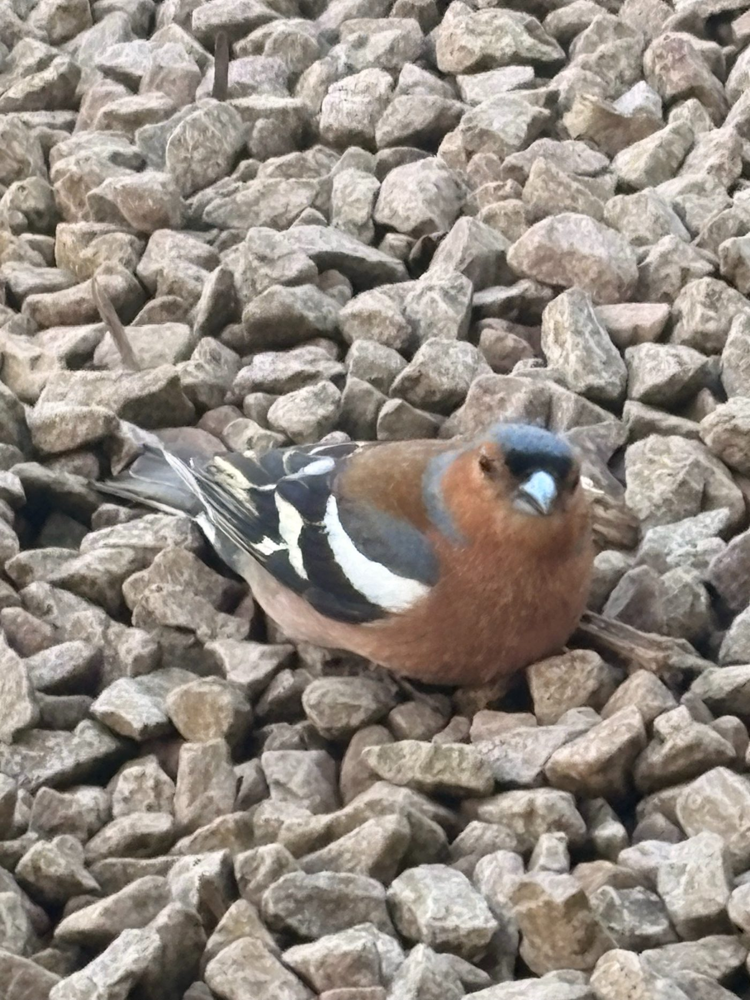
Another regular visitor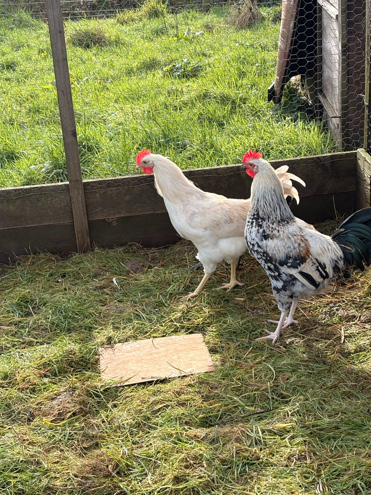
The farm's chickens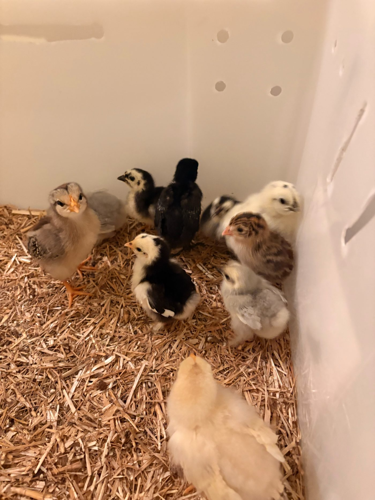
New arrivalsSee the full room-by-room photos for each stay in The Stays, below.
Where to stay
Three stays across the farm

Warren Shepherd's Hut
Warren shares its paddock with Burrow, a working farm setting with hot water, heating, and its own electric shower and loo. No wifi, no TV — just a cosy sofa bed, a small kitchenette, and nowhere else you need to be.


See current rates & availability on Airbnb
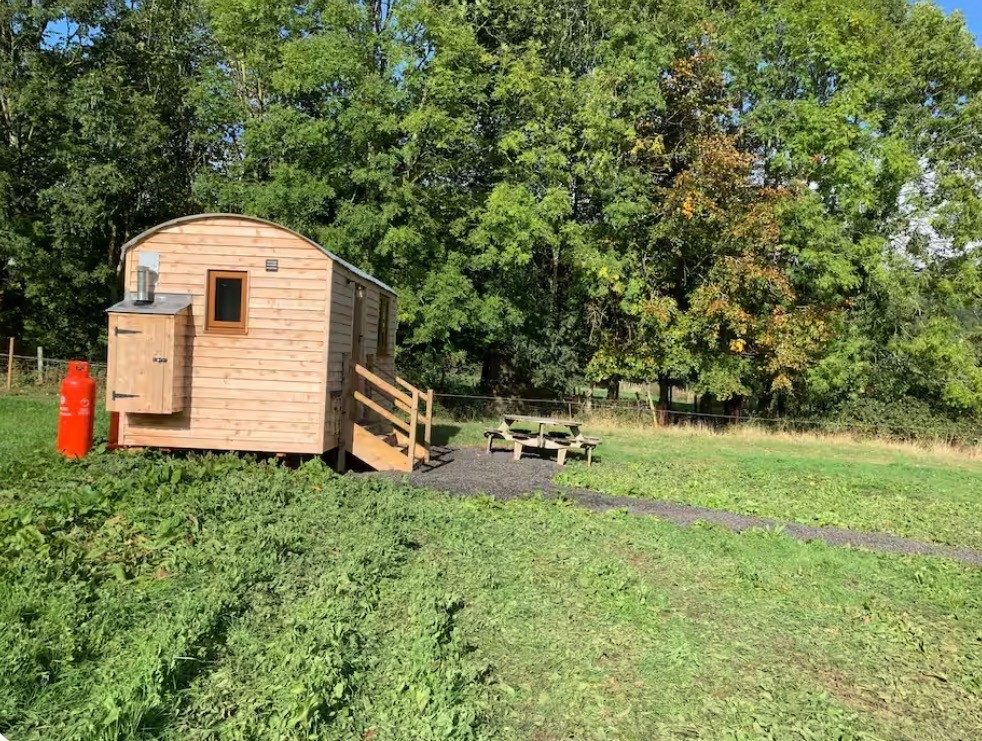
Burrow Shepherd's Hut
Burrow shares the paddock with Warren, set on the far side from the parking area — and it's the slightly larger of the two huts. Same easy comforts: heating, an en-suite shower and loo, a sofa bed, and no wifi or TV to get in the way.


See current rates & availability on Airbnb
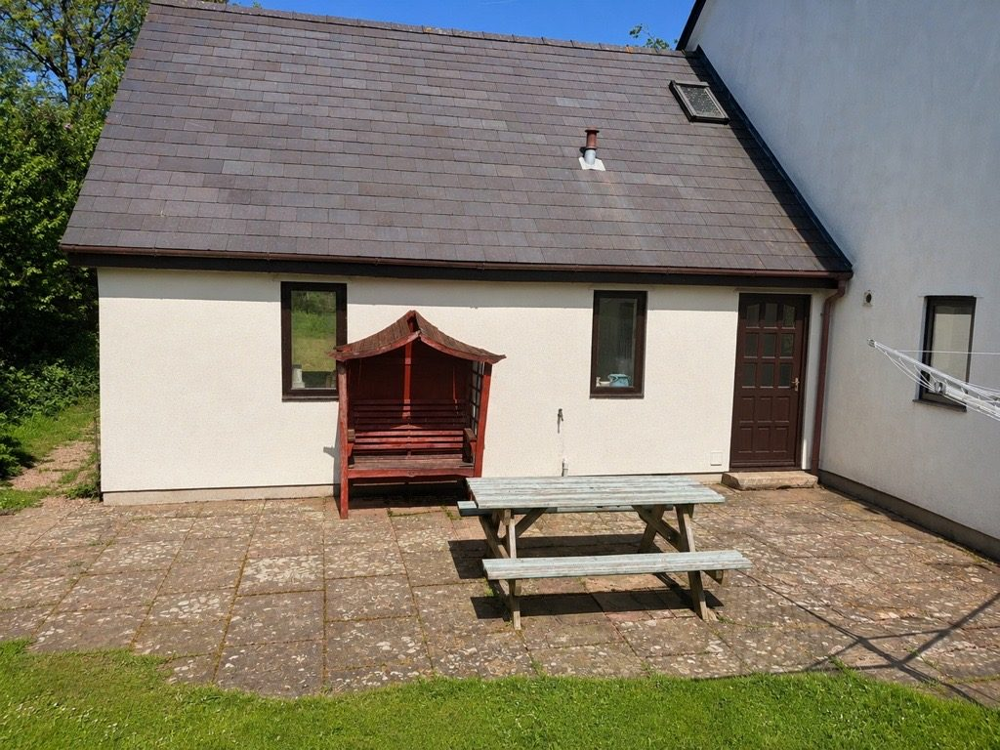
The Farmhouse Annex
Its own entrance off the side patio, so you can come and go as you please without troubling the main house. A super king room with a sofa bed too — room for up to four — plus a private shower room and a utility kitchenette downstairs.


See current rates & availability on Airbnb
In their words
What guests are saying
“Wonderful experience. Very tranquil and relaxing, lovely views. Short walk into Tintern where there are good amenities — a friendly and informative host, highly recommended.”
Paul · stayed at Warren
“Great escape from London for Easter holiday. Tintern Abbey is 15–20 mins walk from the hut. Absolutely recommend this lovely cozy hut to everyone!”
Weicheng · stayed at Burrow
“A welcoming and helpful host, very comfortable bed, in a beautiful location a walkable distance from the town and the Abbey. Would definitely stay again.”
Josephine · stayed at the Farmhouse Annex
Returning guests
Most people who come to Reddings Retreat come back to it.
Some return for the same hut, the same week, the same fire, year after year. Others come to try the one they missed last time. Either way, if you've stayed before, get in touch direct — we keep a note of what you liked, and we're always glad to see you again.
Book your return stayVisiting
Tintern and the Wye Valley
Tintern Abbey, a short walk from the farm
- On foot10 minutes down the farm track into Tintern village, on a clear and easy path.
- In the villageFour pubs, a shop, and a café — enough choice for a week without needing the car.
- NearbyTintern Abbey and the wooded slopes of the Wye Valley, right on the doorstep.
- SeasonOpen all year — the huts are warm through winter and shaded through summer.
Getting here
Reddings Retreat is on a working farm above Tintern, in the Wye Valley, Wales.
Full directions and what3words are sent with every booking confirmation.
Good to know
Before you book
Is there wifi or a TV?
Not in Warren or Burrow — deliberately. Mobile signal (4G/5G) is good in both, so you're not cut off, just unplugged from a screen. The Farmhouse Annex does have a TV and DVD player.
Can we bring a pet?
We can't allow pets, unfortunately. Reddings Retreat is on a working farm with nesting birds, poultry and livestock, so it's not a decision we can make exceptions on.
Is smoking or vaping allowed?
No — all three stays are non-smoking and no e-cigarettes or vaping, inside or out.
What's the water like?
Drinking water on the farm comes from our own spring rather than the mains. It's filtered and treated, so it's safe to drink — but if you'd rather not, you're welcome to bring bottled water instead.
Is there parking, and is the farm easy to find?
Yes, free parking on site. Full directions and what3words are sent with your booking confirmation. Note that the farm gate is sometimes closed overnight in summer (roughly 11pm–5am) — just close it behind you if so, or let us know and we'll do it.
Do we need to be there for check-in?
Check-in is contactless by default, so you can arrive and settle in on your own schedule. If you'd rather be welcomed in person, just let us know when booking and we'll arrange it.
Check dates
See what's free
Pulled from our live Airbnb calendar — for exact pricing and to book, use the Airbnb links above.
Get in touch
Ready for your own stay on the farm?
Enquire direct for the best rates, or book straight through Airbnb if you'd rather do it that way.